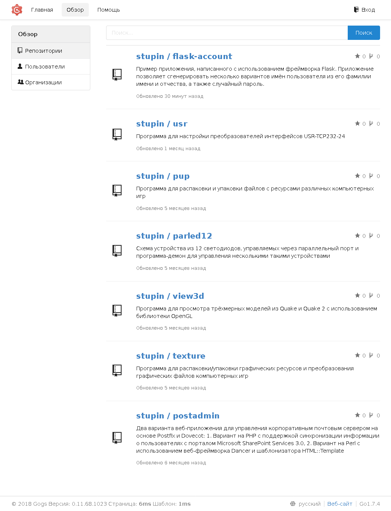

Gogs - это веб-интерфейс для работы с репозиториями git. Приложение написано на языке программирования Go, не требовательно к системным ресурсам и поэтому хорошо подходит для организации репозиториев исходных текстов небольших команд разработчиков.
Устанавливаем утилиту git и компилятор языка Go из репозиториев:
# apt-get install git golang-go
Создадим каталог для сборки приложения и перейдём в него:
$ mkdir gogs $ cd gogs
Скачиваем и собираем приложение в только что созданном каталоге. При сборке указываем тег, предписывающий включить поддержку SQLite3:
$ env GOPATH=/home/stupin/gogs/ go get github.com/gogs/gogs $ cd src/github.com/gogs/gogs $ env GOPATH=/home/stupin/gogs/ go build -tags sqlite
Создаём пользователя gogs, от имени которого будет работать приложение:
# useradd -c 'Gogs' -r -M -d /opt/gogs gogs
Создаём каталог приложения gogs и копируем в него только то, что необходимо для работы приложения:
# cd /opt # mkdir gogs # cd gogs # cp -R /home/stupin/gogs/src/github.com/gogs/gogs/gogs /home/stupin/gogs/src/github.com/gogs/gogs/public /home/stupin/gogs/src/github.com/gogs/gogs/templates .
Создаём каталог для файла конфигурации:
# mkdir -p custom/conf/
Создаём файл /opt/gogs/custom/conf/app.ini с настройками приложения:
[server] DOMAIN = stupin.su HTTP_ADDR = 127.0.0.1 HTTP_PORT = 3000 ROOT_URL = https://stupin.su/git/ DISABLE_SSH = false SSH_PORT = 22 OFFLINE_MODE = false
Чтобы настройки приложения в дальнейшем можно было поменять в процессе первоначальной настройки через веб-интерфейс, дадим пользователю gogs доступ к файлу конфигурации:
# chown gogs:gogs /opt/gogs/custom/conf/app.ini
Создаём service-файл /etc/systemd/system/gogs.ini для запуска/остановки приложения через systemd:
[Unit] Description=Gogs (Go Git Service) After=syslog.target After=network.target ;After=postgresql.service After=nginx.service [Service] Type=simple User=gogs Group=gogs WorkingDirectory=/opt/gogs ExecStart=/opt/gogs/gogs web Restart=always Environment=USER=gogs HOME=/opt/gogs [Install] WantedBy=multi-user.target
Добавляем сервис в автозапуск при загрузке операционной системы:
# systemctl enable gogs.service
И запускаем его прямо сейчас:
# systemctl start gogs.service
Если приложение планируется запускать на выделенном домене, то для настройки проксирования внешних запросов с https на локальный адрес http при помощи nginx в общем случае нужно создать следующую конфигурацию в файле /etc/nginx/sites-enabled/gogs:
server {
listen 80;
server_name example.com;
return 302 https://$server_name$request_uri;
}
server {
listen 443 ssl;
server_name example.com;
ssl_certificate /path/to/certificate.crt;
ssl_certificate_key /path/to/certificate_key.key;
location / {
proxy_set_header X-Real-IP $remote_addr;
proxy_pass http://localhost:3000;
}
}
И подключить её командой:
# sudo ln -s /etc/nginx/sites-available/gogs /etc/nginx/sites-enabled/gogs
Я же разместил приложение на одном домене с другими приложениями, в отдельном каталоге. Для настройки впишем в файл /etc/nginx/sites-enabled/root настройки проксирования запросов с адреса https://stupin.su/git/ на адрес http://127.0.0.1/git/:
# Gogs
location /git/ {
proxy_redirect off;
proxy_bind 127.0.0.1;
proxy_set_header Host $host;
proxy_set_header X-Real-IP $remote_addr;
proxy_pass http://127.0.0.1:3000/;
}
Осталось зайти в приложение и завершить его настройку. Я создал электронный почтовый ящик gogs@stupin.su и использовал следующие настройки:
Настройки базы данных
Тип базы данных: SQLite3
Путь: data/gogs.db
Общие параметры Gogs
Имя приложения: Gogs
Путь корня репозитория: /opt/gogs/gogs-repositories
Пользователь: gogs
Домен: stupin.su
SSH порт: 22
Использовать встроенный SSH сервер: Нет
Порт HTTP: 3000
URL приложения: https://stupin.su/git/
Путь к журналу: /opt/gogs/log
Включите режим консоли: Нет
Расширенные настройки
Настройки службы электронной почты:
Узел SMTP: mail.stupin.su:587
Из: gogs@stupin.su
Электронная почта отправителя: gogs@stupin.su
Пароль отправителя: mailbox_password
Включить подтверждение регистрации: Да
Разрешить почтовые уведомления: Да
Сервер и другие настройки служб
Включение офлайн режима: Нет
Отключить службу Gravatar: Да
Включить поиск внешних Аватаров: Нет
Отключить самостоятельную регистрацию: Да
Включить капчу: Нет
Разрешить требовать авторизацию для просмотра страниц: Нет
Настройки учётной записи администратора
Имя пользователя: stupin
Пароль:
Подтвердить пароль:
Электронная почта администратора: vladimir@stupin.su
После сохранения этих настроек файл /opt/gogs/custom/conf/app.ini принял следующий вид:
APP_NAME = Gogs RUN_USER = gogs RUN_MODE = prod [server] DOMAIN = stupin.su HTTP_ADDR = 127.0.0.1 HTTP_PORT = 3000 ROOT_URL = https://stupin.su/git/ DISABLE_SSH = false SSH_PORT = 22 OFFLINE_MODE = false START_SSH_SERVER = false [database] DB_TYPE = sqlite3 HOST = 127.0.0.1:3306 NAME = gogs USER = root PASSWD = SSL_MODE = disable PATH = data/gogs.db [repository] ROOT = /opt/gogs/gogs-repositories [mailer] ENABLED = true HOST = mail.stupin.su:587 FROM = gogs@stupin.su USER = gogs@stupin.su PASSWD = mailbox_password [service] REGISTER_EMAIL_CONFIRM = true ENABLE_NOTIFY_MAIL = true DISABLE_REGISTRATION = true ENABLE_CAPTCHA = false REQUIRE_SIGNIN_VIEW = false [picture] DISABLE_GRAVATAR = true ENABLE_FEDERATED_AVATAR = false [session] PROVIDER = file [log] MODE = file LEVEL = Info ROOT_PATH = /opt/gogs/log [security] INSTALL_LOCK = true SECRET_KEY = secret_key
Теперь для пущей безопасности, чтобы никто не подсмотрел в файле пароль почтового ящика mailbox_password и ключ secret_key, которым шифруются данные сеансов пользователей, поменяем права доступа к файлу конфигурации:
# chmod ug=r,o= /opt/gogs/custom/conf/app.ini
Пример страницы обзора репозиториев:
